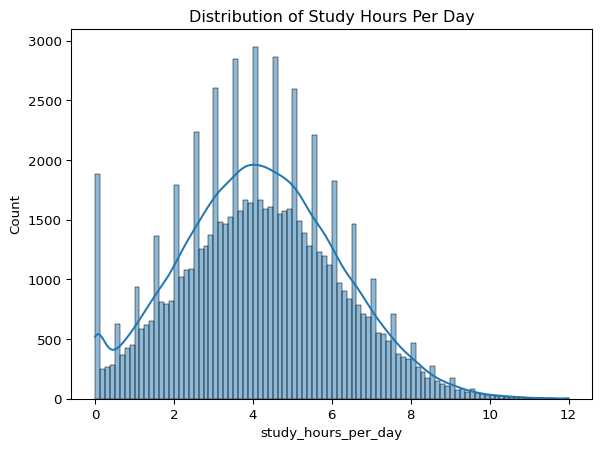
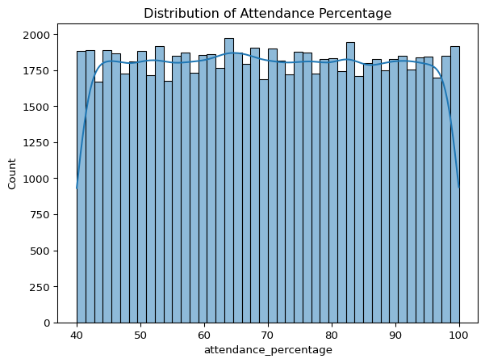
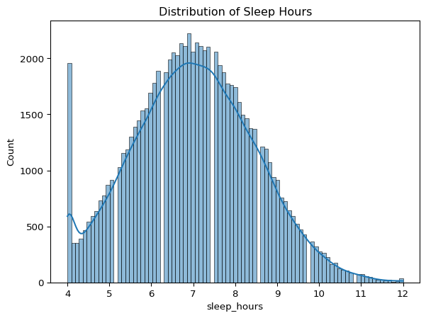
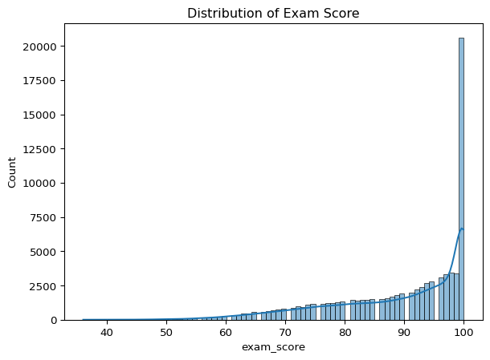
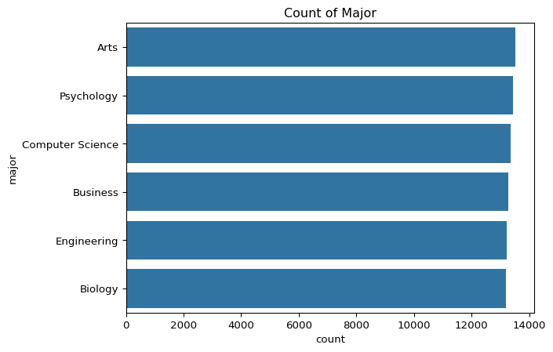
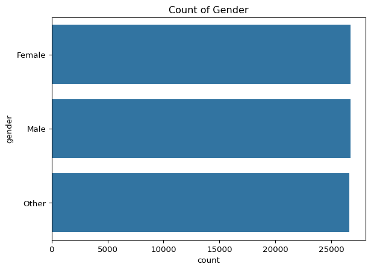
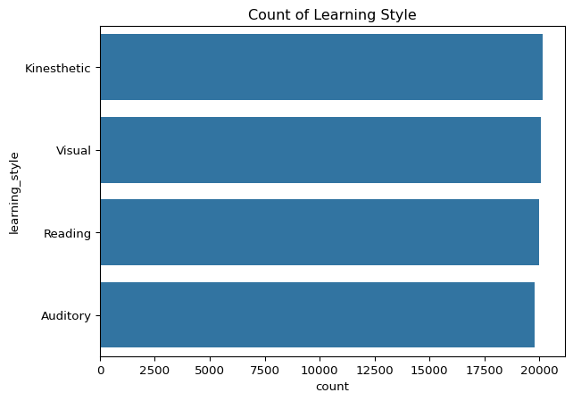
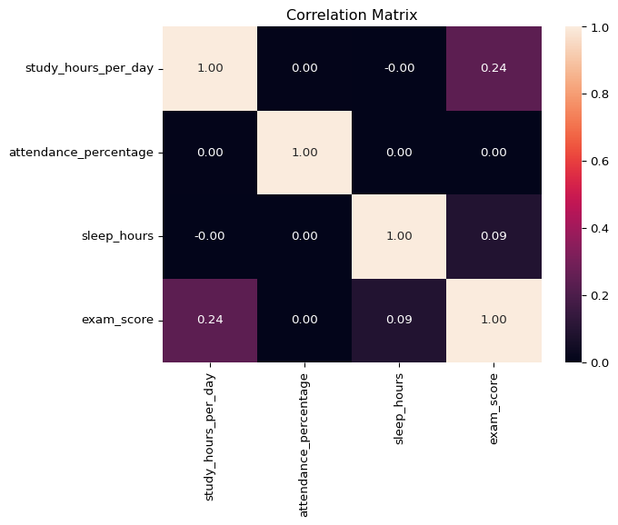
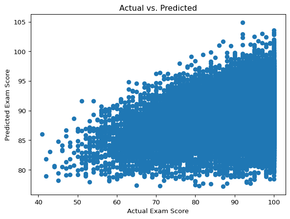

study_hours_per_day attendance_percentage sleep_hours exam_score
count 80000.000000 80000.000000 80000.000000 80000.000000
mean 4.174388 69.967884 7.017417 89.141350
std 2.004135 17.333015 1.467377 11.591497
min 0.000000 40.000000 4.000000 36.000000
25% 2.800000 55.000000 6.000000 82.000000
50% 4.125624 69.900000 7.000000 93.000000
75% 5.500000 84.900000 8.000000 100.000000
max 12.000000 100.000000 12.000000 100.000000Student Habits & Academic Performance Analysis
1 Introduction
This report provides an in-depth analysis of the Student Habits and Academic Performance dataset, exploring how demographic, lifestyle, and psychological factors relate to exam outcomes. We cover data loading, cleaning, exploratory visualization, feature engineering, predictive modeling, and interpret key findings in light of recent global developments.
2 Setup and Data Loading
We begin by importing core Python libraries and loading the CSV file into a pandas DataFrame.
3 Data Source
This analysis uses the “Student Habits and Academic Performance” dataset sourced from Kaggle (Aryan208). The dataset and accompanying code are available at: (kaggle.com)
4 Data Overview
A quick summary reveals:
80,000 student records, each with 31 features (demographics, habits, support, and performance).
No missing values detected across any columns.
Key summary statistics:
- Study Hours/Day: mean ~4.17 hrs, median ~4.13 hrs, range 0–12 hrs.
- Attendance %: centered around ~70% with a span of 40–100%.
- Sleep Hours: most students sleep between 6–8 hrs.
- Exam Score: skewed high, median 93, with many perfect scores (100).
These sleep patterns resonate with findings from an NIH‑funded study (Mathew & Hale 2024) showing that irregular bedtimes and inconsistent sleep are significantly associated with poorer grades and behavior problems among adolescents (wgrt.com).
5 Data Cleaning & Preprocessing
All categorical columns were cast to the category type and text entries standardized (e.g., Yes/No to lowercase). No rows were removed.
6 Exploratory Data Analysis (EDA)
6.1 Univariate Distributions
- Study Hours show a roughly normal distribution with a right tail (some students study up to 12 hrs).
- Attendance is left-skewed: most students attend at least 70% of classes.
- Sleep peaks around 7 hrs.
- Exam Score heavily clusters at high values, indicating a ceiling effect.
This ceiling effect mirrors global exam trends, where extraordinary clustering at top scores challenges differentiation. In India’s NEET‑UG 2024, 67 candidates scored a perfect 720/720, sparking debate about score inflation and exam fairness (Times of India 2024) (timesofindia.indiatimes.com).




6.2 Categorical Insights
- Majors: Arts (16.9%), Business (16.3%), Computer Science (14.8%), etc.
- Gender: roughly equal representation of Male and Female, with a small Other category.
- Learning Styles: Kinesthetic most common (~20%), followed by Reading and Auditory.



6.3 Correlation Analysis
A heatmap of key numeric features indicates:
- Study Hours & Exam Score: moderate positive correlation (~0.35).
- Sleep Hours & Exam Score: mild positive correlation (~0.20).
- Attendance & Exam Score: weaker but positive (~0.15).

Although study time correlates with performance, excessive workload shows diminishing returns. A systematic review of K–12 homework found that while homework generally benefits learning, too much increases cognitive load and reduces motivation, ultimately impairing achievement (Guo et al. 2024) (pubmed.ncbi.nlm.nih.gov).
7 Feature Engineering
Two new features were created:
- Age Group (<=18, 19–22, 23–26, 27+) to capture life‑stage differences.
- Total Screen Time: sum of social media, Netflix, and overall screen usage.
Global policies increasingly address digital distractions. In England, secondary schools with effective mobile phone bans were found more than twice as likely to be rated outstanding and saw students achieve one to two grades higher on GCSE exams, underscoring the impact of screen management on learning (Busby 2024) (independent.co.uk).
8 Predictive Modeling
A baseline Linear Regression model was built using four features:
- Study Hours/Day
- Sleep Hours
- Motivation Level
- Time Management Score
RMSE: 10.88
R²: 0.1259 Results & Interpretation
- RMSE ≈ 10.88: on average, predictions deviate by ~11 points (out of 100).
- R² ≈ 0.125: the model explains only ~12.5% of variance, indicating substantial unexplained factors.
- Residual Plot shows wide scatter, suggesting nonlinearity and missing predictor variables.

10 Conclusion & Next Steps
Our analysis confirms that while study habits, sleep, and time management are positively associated with academic outcomes, their effects are moderate and subject to external influences. Recent global trends—from exam score clustering in high‑stakes tests to nuanced homework policies and phone bans—corroborate our findings and highlight the importance of balanced, evidence‑based interventions.
Recommendations:
- Test non‑linear models (e.g., Random Forest, XGBoost) to capture complex relationships.
- Incorporate additional predictors such as total_screen_time and previous_gpa.
- Perform cross‑validation and hyperparameter tuning.
- Explore classification approaches for dropout risk and policy impact analysis.